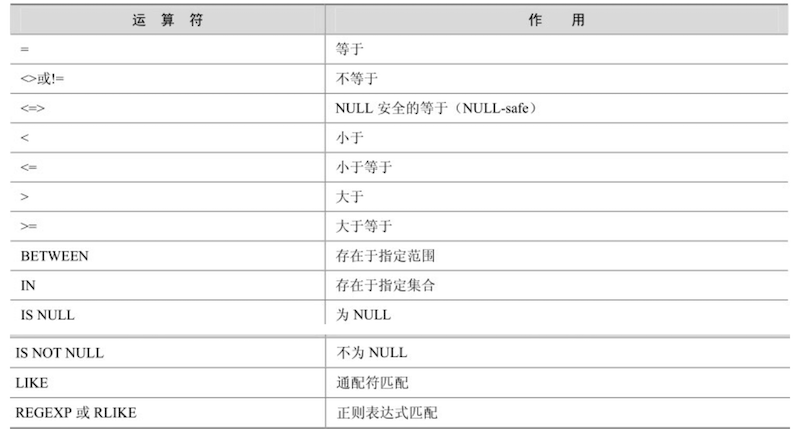
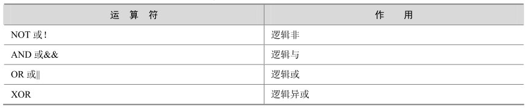

运算符
MySQL中同样也支持运算符。
1. 算数运算符
select 123 + 543, 321 * 5, -456 / 2, 10 % 3, 2 / 0, 3 % 0;
/* 输出:
+-----------+---------+-----------+--------+-------+-------+
| 123 + 543 | 321 * 5 | -456 / 2 | 10 % 3 | 2 / 0 | 3 % 0 |
+-----------+---------+-----------+--------+-------+-------+
| 666 | 1605 | -228.0000 | 1 | NULL | NULL |
+-----------+---------+-----------+--------+-------+-------+
1 row in set, 2 warnings (0.00 sec)
*/
2. 比较运算符

常规比较
select 1=2, 2<3, 3<=4, 4>5, 5>=3, 8!=9, 8<>9, 'abc' = 'Abc', 'z' > 'a'; /* 输出: +-----+-----+------+-----+------+------+------+---------------+-----------+ | 1=2 | 2<3 | 3<=4 | 4>5 | 5>=3 | 8!=9 | 8<>9 | 'abc' = 'Abc' | 'z' > 'a' | +-----+-----+------+-----+------+------+------+---------------+-----------+ | 0 | 1 | 1 | 0 | 1 | 1 | 1 | 1 | 1 | +-----+-----+------+-----+------+------+------+---------------+-----------+ 1 row in set (0.00 sec) */范围比较
select 123 between 100 and 200, 'b' in ('a', 'b', 'c'); /* 输出 +-------------------------+------------------------+ | 123 between 100 and 200 | 'b' in ('a', 'b', 'c') | +-------------------------+------------------------+ | 1 | 1 | +-------------------------+------------------------+ 1 row in set (0.04 sec) */Null 比较：判断是否是Null时，不能使用
=，而要使用is，或者<=>select 12 is null, 23 = null, null = null, null <=> null, null is null, 32 is not null; /* 输出 +------------+-----------+-------------+---------------+--------------+----------------+ | 12 is null | 23 = null | null = null | null <=> null | null is null | 32 is not null | +------------+-----------+-------------+---------------+--------------+----------------+ | 0 | NULL | NULL | 1 | 1 | 1 | +------------+-----------+-------------+---------------+--------------+----------------+ 1 row in set (0.00 sec) */模糊比较: like
select 'HelloWorld' like 'hello%'; /* 输出 +----------------------------+ | 'HelloWorld' like 'hello%' | +----------------------------+ | 1 | +----------------------------+ 1 row in set (0.00 sec) */正则比较:regexp
select "good" regexp "go{2}d"; /*输出 +------------------------+ | "good" regexp "go{2}d" | +------------------------+ | 1 | +------------------------+ 1 row in set (0.01 sec) */
3. 逻辑运算符
